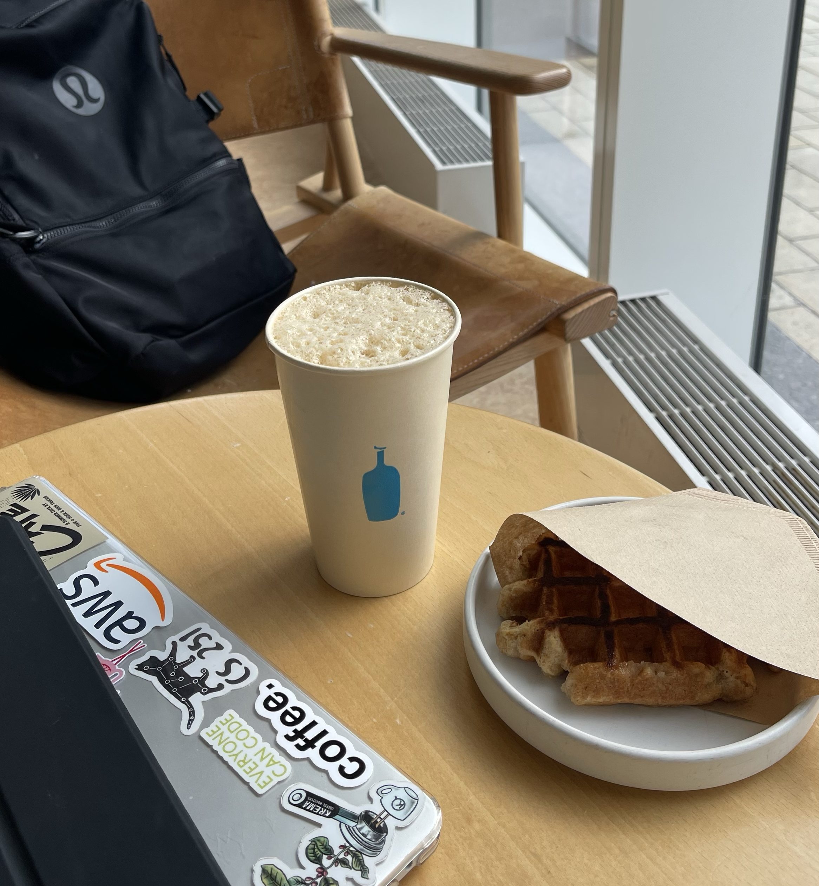
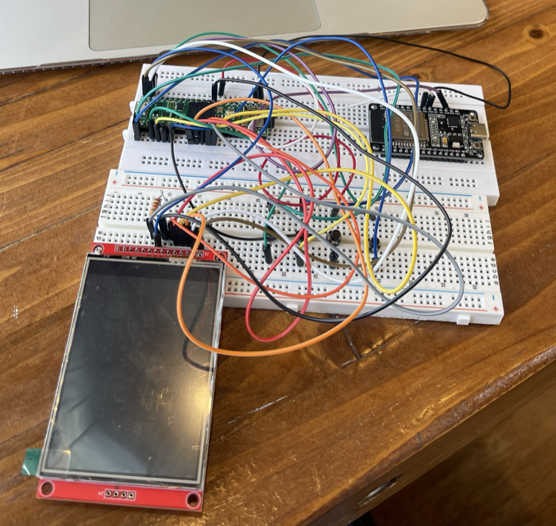

Available for full time roles & internships
Jocelyn Heredia.
Computer Engineer.
UIC Computer Engineering grad, now studying Human‑Computer Interaction at DePaul. I build technology that feels as good as a Chicago summer morning with a fresh latte.
About me
From circuits to people.
I'm a proud graduate of the University of Illinois Chicago, where I earned my Bachelor of Science in Computer Engineering with a minor in Mathematics. My engineering background taught me how systems work from the hardware up. Now I'm pursuing a Master's Human‑Computer Interaction at DePaul University to learn how to make those systems genuinely intuitive for the people who use them.
DePaul University
Master of Science in Human‑Computer Interaction
University of Illinois Chicago
Bachelor of Science in Computer Engineering
Minor in Mathematics
What I bring.
A rare blend of technical depth and design empathy.
Engineering
Hardware and software fundamentals, embedded systems, and programming from a Computer Engineering foundation.
Analytical thinking
A Mathematics minor that sharpens how I model problems, reason about data, and measure outcomes.
Human‑centered design
User research, wireframing, prototyping, and usability testing through graduate HCI study.
Tools of the trade.
Let's build something great.
Open to full time roles, interships, research, and engineering roles.